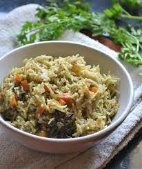
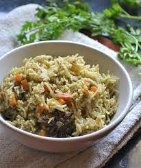

Jadoh
Will you prepare Jadoh for us? We asked our host in Mawphlang. He gave a smile and asked if we wanted the one suitable for a tourist, or were we adventurous enough to try the traditional Jadoh of the Khasi tribe. In Khasi language, ‘Ja’ means rice and ‘Doh’ means meat. While most of the Khasi food involves some or the other form of meat, vegetables generally take a back seat and are only consumed as salads. Most of the tourists opt for the Jadoh that is cooked in pork fat itself. The locals also enjoy eating ‘Jadoh snam’ that is cooked in blood. Jadoh for a Khasi is like biryani for a North Indian, with rice cooked with meat. But the spices are very different and it does not use much of oil. Most recipes of Jadoh snam will talk about carefully choosing the type of blood as it can enhance or destroy the taste. However, our host told us that they can make it go with any blood that is available. Are you up for it? If yes, chuck the recipes on internet and travel to a village of Meghalaya to try the authentic Jadoh. It is generally eaten during morning by the locals during Khasi festivals. Pork or chicken blood is added while cooking adding a distinct metallic taste to the rice. By the way, we were weak hearted. So we opted for the Jadoh cooked in pork fat only without blood.
 

Doh-Khlieh
A wholesome meal that is healthy at the same time – Doh Khlieh is a delicious salad made out of minced pork, onions, and chilies. If you are in the mood for some fusion food, some places dish up Doh-Khlieh with a Mexican touch by adding beans, tomatoes, carrots, and lemons. It is also sometimes cooked as a curry of pig brains and eaten with bread.
Nakham Bitchi
It is a delicious soup, which is taken mainly after a heavy spicy meal. This dish is quite popular among Meghalaya People. The people of Meghalaya serve their guests with this delicious soup. This dish is made from dry fish with vegetables. Make it with boiling vegetables and fish. They do not add water to it. It is really nutritious and delicious. Now, you know the beauty secret of Garo maidens.